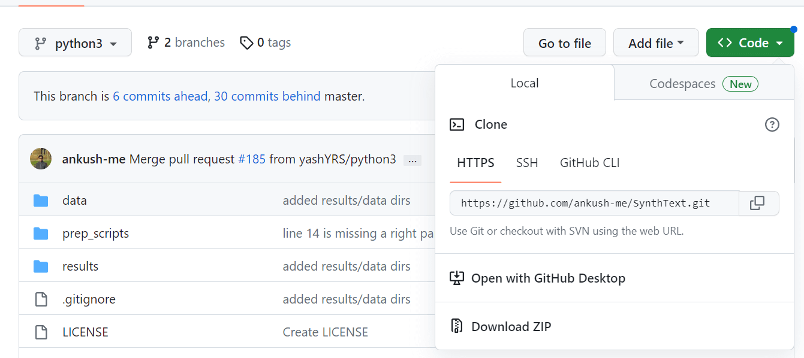

Paper-Synthetic Data for Text Localisation in Natural Images
资源
- 原文：[1604.06646v1] Synthetic Data for Text Localisation in Natural Images (arxiv.org)
- PaddleOCR：[1604.06646v1] Synthetic Data for Text Localisation in Natural Images (arxiv.org)
- 代码：ankush-me/SynthText: Code for generating synthetic text images as described in “Synthetic Data for Text Localisation in Natural Images”, Ankush Gupta, Andrea Vedaldi, Andrew Zisserman, CVPR 2016. (github.com)
笔记
本文介绍了一种在自然图像中检测文本的新方法。该方法包括两个贡献：第一，一种快速可扩展的引擎，用于在杂乱的自然背景图像中生成合成文本图像。该引擎以自然的方式叠加合成的文本到现有的背景图像上，考虑到局部的三维场景几何形态。第二，我们使用合成图像来训练一个完全卷积的神经网络模型，实现自然图像中文本的检测与定位——ChatGPT
亮点：
- 提出了一个快速、可扩展的引擎，用于在杂乱的文本中生成合成图像，生成了数据集 Synth Text in the Wild。
- 在合成图像上训练一个全卷积回归网络（Fully-Convolutional Regression Network, FCRN），该网络在图像的所有位置和多个尺度上有效地执行文本检测和边界盒回归。
我们的合成引擎（synthetic engine）：
- 真实（realistic）
- 自动化（automated）
- 快速（fast）
文本生成管道（text generation pipeline）步骤：
- 获取合适的文本和图像样本
- 文本以三种方式从 Newsgroup20 数据集中提取一一单词、行（最多 3 行）和段落（最多 7 行）
- 从谷歌图像搜索中提取了 8000 张背景图像，涉及了不同的场景，通过人工检查丢弃包含文本的图像
- 基于局部颜色（color）和纹理（texture）线索（cues）将图像分割成连续的区域，使用 [30] 的 CNN 获得密集的逐像素深度图（dense pixel-wise depth map）
- 对 gPb-UCM 轮廓层次进行阈值处理，获得区域
- 对每个相邻区域估计一个局部表面法线
- 使用 RANSAC 对其拟合平面
- 根据区域的颜色选择文本和可选的轮廓的颜色
- 一旦确定了文本的位置和方向，文本就会被分配一种颜色。
- 文本的调色板是从IIIT5K单词数据集中裁剪的单词图像中学习的。每个裁剪的单词图像中的像素使用K-means划分为两组，产生颜色对，其中一种颜色近似前景(文本)颜色，另一种颜色近似背景。在渲染新文本时，选择背景颜色与目标图像区域最匹配的颜色对(在Lab色彩空间中使用L2-norm)，并使用相应的前景颜色来渲染文本。
- 大约 20% 的文本实例被随机选择为具有边框。边界颜色被选择为与前景颜色相同，其值通道增加或减少，或者被选择为前景和背景颜色的平均值。
- 使用随机选择的字体渲染文本，并根据局部表面方向进行转换
- 使用泊松图像编辑（poisson image editing）将文本混合到场景中
- 保持合成文本图像中的光照梯度，我们使用泊松图像编辑器[35]将文本混合到基础图像上，其引导场定义为公式(12)。我们使用Raskar提供的实现有效地解决了这个问题
代码
这个项目好像有点旧，像是用 python 2.x 写的……结果我还是装了一个 3.9 的环境，结果代码改半天orz
|
然后一阵乱装：
|
从Synthetic Data for Text Localisation in Natural Images - Academic Torrents下载一些必要的文件
我说婷婷！没注意README.md里这句话：
The code in the branch is for Python2. Python3 is supported in the branch.
masterpython3
于是转到ankush-me/SynthText at python3 (github.com)下载代码：

啊啊啊啊啊啊啊啊啊啊啊啊啊啊啊啊啊啊啊 Windows 下跑不了啊啊啊啊啊啊啊啊啊啊啊啊啊啊啊啊改天用服务器吧啊啊啊啊啊啊啊啊啊
AttributeError: module 'signal' has no attribute 'SIGALRM'